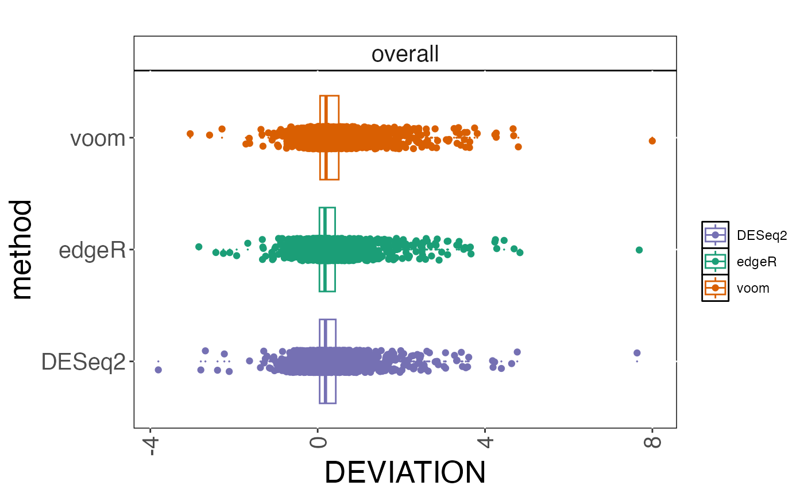

Plot the deviations between observed scores and the continuous truth variable.
Usage
plot_deviation(
cobraplot,
title = "",
stripsize = 15,
titlecol = "black",
xaxisrange = NULL,
plottype = "boxplot",
dojitter = TRUE,
transf = "raw"
)Arguments
- cobraplot
A
COBRAPlotobject.- title
A character string giving the title of the plot.
- stripsize
A numeric value giving the size of the strip text, when the results are stratified by an annotation.
- titlecol
A character string giving the color of the title.
- xaxisrange
A numeric vector with two elements, giving the lower and upper boundary of the x-axis, respectively.
- plottype
Either "boxplot" or "violinplot", indicating what type of plot to make.
- dojitter
A logical indicating whether to include jittered data points or not.
- transf
A character indicating the transformation to apply to the deviations before plotting. Must be one of "raw", "absolute" or "squared"
Examples
data(cobradata_example)
cobraperf <- calculate_performance(cobradata_example, cont_truth = "logFC",
aspects = "deviation")
#> Warning: Object doesn't have a slot sval. Please run update_cobradata(). For consistency, I will return an empty data.frame
cobraplot <- prepare_data_for_plot(cobraperf, colorscheme = "Dark2",
incltruth = TRUE)
plot_deviation(cobraplot)
#> Warning: Removed 4377 rows containing non-finite outside the scale range
#> (`stat_boxplot()`).
#> Warning: Removed 4377 rows containing missing values or values outside the scale range
#> (`geom_point()`).
